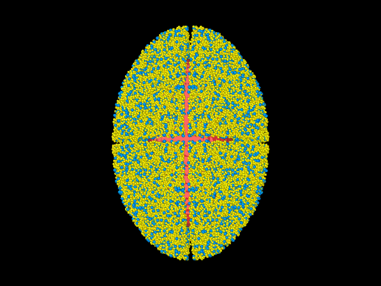

What is a continuum? It is totally hocus-pocus-mathamatocus!
All matter that we see around us can be theoretically understood as continuous, such that differential and integral forms of equations representing their behaviour may be possible. This, quite often, allows us to obtain analytical expressions for understanding how they might respond to external agents like forces or moments. However, matter fundamentally — as we all know — is made of elementary units like molecules and atoms. It is discrete. A continuum, thus, is more like a mathematical construct rather than the reality.
The interaction law between the elementary units manifests itself in the continuum theory as what we popularly call the 'constitutive relation', which differentiates not only between different states of matter (solid, liquid, gaseous) but also amongst the sub-classes within them — for example, Newtonian and non-Newtonian fluids. Speaking of continuum, you may look into the Knudsen number, calculating which for a system tells you whether the continuum hypothesis is valid or not.
Where continuum breaks down
However useful, the applicability of the popular mass, momentum and energy balances for continuous media breaks down at discontinuities, or when molecules are so arranged that separate constitutive relations are required to describe different regions in the same substance. A popular example of the latter is granular materials. Why? Granular materials behave like solids when stacked (sugar in a container), flow like liquids when sheared (landslides on mountains), and move randomly like gases when energised significantly (rings of Saturn). This video gives a great illustration. This requires one to be very careful while dealing with such discrepancies, often complicating the analysis in a way even Boltzmann might find difficult to understand.
DEM to the rescue
While continuum theories are able to accurately model these different phases, it becomes a tad bit more painful to formulate a unified theory for all of them. This is where DEM — the Discrete Element Method — comes in. A lot is obvious from just the nomenclature: the treatment is discrete. Granular materials are collections of particles which primarily interact only via collisions. In some cases there could be other 'contact' interactions involved — cohesion, Coulomb friction, etc. In others, one particle may interact with all others including those not in contact, like when electrostatic or gravitational forces exist between particles. All of this is easily, albeit at a much higher computational cost, simulated using DEM. DEM can capture some really interesting phenomena, like jamming in granular materials, which is otherwise difficult using continuum models.
Why easy? Can anybody do it?
Easy because all that needs to be solved is F = ma (well, τ = Iα if rotations are included, but that's just the same). At every timestep, the total force F can be calculated from a sum of all forces acting on a particle. Since the mass m is known, the acceleration a may be computed and numerically integrated once and twice to obtain velocity and displacement respectively.
Collisions are modelled by a pair of normal and tangential springs and dashpots, which could be linear or non-linear depending on the material being modelled. The spring decelerates relative motion between particles in contact; the dashpot dissipates energy, rendering collisions realistic and inelastic. There are six outputs: three for velocity and three for displacement. Once you have an RK4 or any other time-marching scheme in place, it is basically solving lakhs and lakhs of ODEs simultaneously.
Limitations of DEM
While DEM works with the least possible assumptions and captures most possible physics, there are of course some limitations. No one is perfect.
Numero uno: Spherical particles. While people have tried all kinds of weird shapes, spherical particles get jobs done at a fractional expense compared with others — and even that expense is very high. You need supercomputers, and they have an enormous carbon footprint.
Numero dos: Interaction laws can get super complicated and lead to high computational costs. Long-range forces like Coulomb or gravity increase the computational cost quadratically because forces need to be calculated from every particle on every other particle. It's the tool for the well-funded labs and government-funded educational institutes.
DEM in planetary sciences
In my Masters thesis, I used both continuum theory and DEM to study granular avalanches on rotating and gravitating asteroids. The use of DEM was primarily to evaluate the efficacy of the theory developed. Asteroids like Itokawa and Bennu are rubble-piles exhibiting all three behaviours — solid cores, fluid-like landslides on the surface, and almost gaseous mass shedding from the equatorial region. The video linked above shows the formation of a top-shaped asteroid due to surface landslides.

Granular avalanches on a rotating body reshaping it into a top — DEM simulation
I used the popular open-source DEM software LAMMPS but had to tweak the source code to include the gravity field of ellipsoids. Several other people use LIGGGHTs, which is better suited for granular materials. For long-range forces like gravity, PKDGRAV and REBOUND work great — the latter is especially built for large numbers of particles at high collision velocities.
Is there something in between?
Hybrid methods pack the accuracy of DEM and the cost-effectiveness of continuum models. If you are interested, you could look into the work of a collaboration between groups at Columbia, MIT and U Tokyo — demonstrated here. There's always something in between!